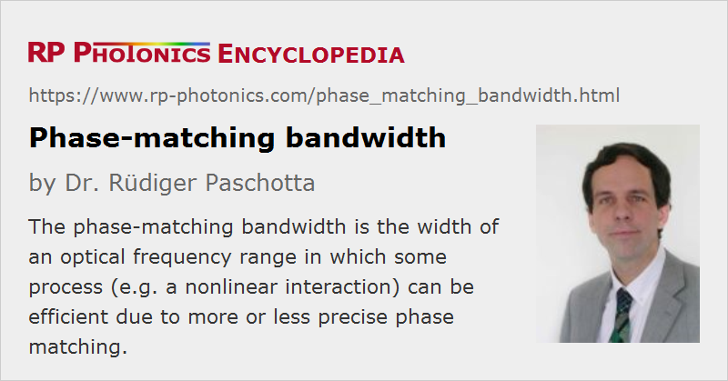

Phase-matching Bandwidth
Definition: the width of an optical frequency range in which some process (e.g. a nonlinear interaction) can be efficient due to more or less precise phase matching
German: Phasenanpassungsbandbreite
How to cite the article; suggest additional literature
Author: Dr. Rüdiger Paschotta
A parametric nonlinear interaction can lead to an efficient exchange of energy only when phase matching is achieved. Essentially this means that a constant phase relationship between the interacting waves is maintained along the propagation direction. Due to chromatic dispersion, phase matching can be achieved only in a limited bandwidth, which is related to the group velocity mismatch of the interacting waves. For example, consider an optical parametric oscillator with angular frequencies ωp, ωs and ωi for pump, signal and idler, respectively. The phase mismatch is
If the signal frequency is varied while the pump frequency is constant, the phase mismatch varies according to
where the second term arises from the fact that the idler frequency automatically adjusts itself to the modified signal frequency. The two derivatives can be related to the inverse group velocities of the two waves, as indicated in the equation. The phase-matching bandwidth is usually defined as the bandwidth in which the phase mismatch (as is accumulated over the whole length of the device) varies by 2.7831 rad. (This corresponds to the half-width of the conversion efficiency curve.) For a crystal with length L, this means that the phase-matching bandwidth is
Modified phase-matching bandwidth parameters can be defined for different conditions, e.g. for the variation of the pump wavelength for a fixed signal wavelength, where the group velocity mismatch between pump and idler occurs in the equation.
The time-domain equivalent of a limited phase-matching bandwidth is a temporal walk-off, as is already apparent from the fact that the group velocity mismatch is involved.
Sometimes, the terms angular acceptance bandwidth and angular phase-matching bandwidth occur in the literature. They basically mean the range of propagation angles for which critical phase matching can be achieved. The angular bandwidth is related to spatial walk-off.
Questions and Comments from Users
Here you can submit questions and comments. As far as they get accepted by the author, they will appear above this paragraph together with the author’s answer. The author will decide on acceptance based on certain criteria. Essentially, the issue must be of sufficiently broad interest.
Please do not enter personal data here; we would otherwise delete it soon. (See also our privacy declaration.) If you wish to receive personal feedback or consultancy from the author, please contact him e.g. via e-mail.
By submitting the information, you give your consent to the potential publication of your inputs on our website according to our rules. (If you later retract your consent, we will delete those inputs.) As your inputs are first reviewed by the author, they may be published with some delay.
See also: phase matching, group velocity mismatch, temporal walk-off, bandwidth, nonlinear frequency conversion
and other articles in the category nonlinear optics
|  |
If you like this page, please share the link with your friends and colleagues, e.g. via social media:
These sharing buttons are implemented in a privacy-friendly way!